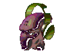

Hello!
I am Adyan Durrani a current year 13 student studying mathamatics, physics and computer science
as A-Levels at a sixth form in Greater London. I am interested in electronics, programing and anything that involves
putting things together. Through my own research, I have expanded my knowledge of electronic components, their functions
and how they can be applied. I have built a number of projects on breadboards such as creating logic gates with transistors;
a servo motor controlled claw that is controlled by a distance sensor and an arduino; a flashlight (:/), and much more.
here are a few things a find cool: music, electronics, the half-life and portal franchises, sterolab, puzzle games and probably some other stuff that I can't think of right now.